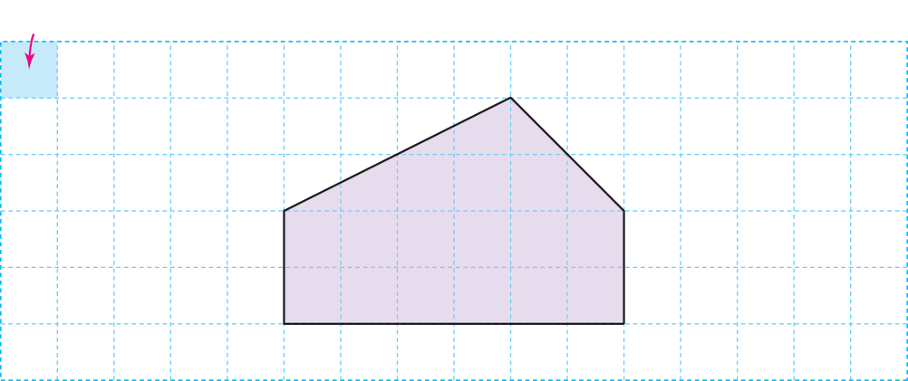
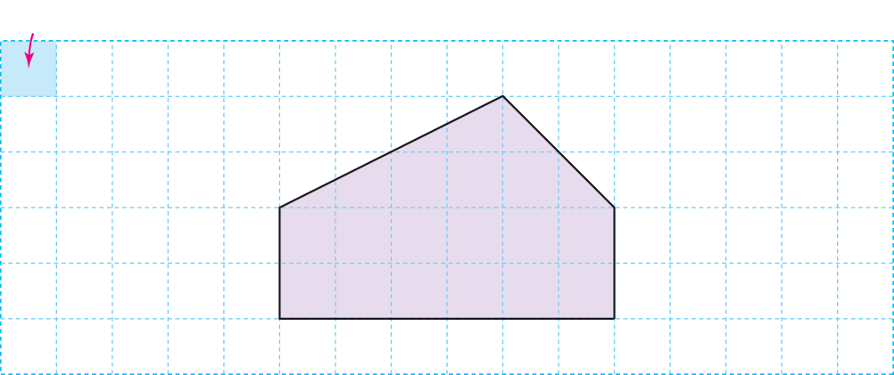

- 문제
- 계획
- 실행
- 반성
-
-
모눈종이 한 칸의 길이는 몇 ㎝인가요?
㎝10 -
평행하거나 수직인 곳이 있나요?
오각형 아랫부분에 한 쌍의 변이 평행하고, 수직인 곳이 두 군데 있습니다.
-
-
-
땅의 넓이는 어떻게 구할 수 있을까요?
예오각형을 삼각형과 직사각형으로 나누어 넓이를 구한 다음 더합니다.
-
-
-
슬기가 차지한 땅의 넓이를 구해 보세요.
-
풀이
-
예(삼각형의 넓이)＝60×20÷2＝600 (㎠),
(직사각형의 넓이)＝60×20＝1200 (㎠)
(전체 땅의 넓이)＝600＋1200＝1800 (㎠)입니다.
-
답
-
㎠1800
-
-
-
해결한 방법을 되돌아 보세요.
-
 
